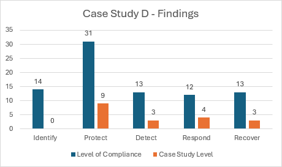

Case Study D
Case Study D is a football club competing in the Highland Football League, the fifth division of the Scottish Football Pyramid, and just below the Scottish League system. Due to the lower levels of popularity and playing levels, this case study has very little access to spare resources both on a financial and personnel level, which is clearly reflected in the below gap analysis:

From the above figure, we can clearly see the difficult situation that football clubs at the lower levels face. With no adherence to the identify category, and very little adherence to the rest of the categories, this case study has a long way to go to ensure even a basic level of protection is given to its assets. An adherence percentage of 15.8% is followed here - a long way to go.
As previously stated, resources at this level of competitive football are incredibly scarce - clearly demonstrated in the above figure. The case study must make compromises to ensure the most important areas of the football club are protected, and potentially have to run the risk of not being fully protected because of the scarcity of resources.